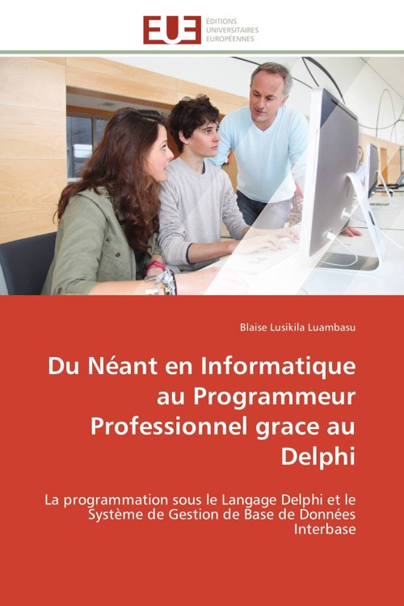

Du néant en informatique au programmeur professionnel grâce au Delphi
Published by : Editions Universitaires européennes
Writed by : Blaise Lusikila Luambasu
Published date : 16/01/2012
ISBN-10 : 3841787940
ISBN-13 : 9783841787941
Language : Français
About Du néant en informatique au programmeur professionnel grâce au Delphi
Qui vous a dit: pour devenir programmeur professionnel il faut au préalable être un informaticien? Croyez-vous que Bill Gates était né avec la programmation dans sa poche? Ou encore, Trésor MBIYA MWENZA programmait avant sa naissance sur terre? Détrompez-vous, tout le monde l’a apprise ici bas. Dans ce livre, nous aborderons le sujet comme si nous sommes tous des bébés et que nous n’avons jamais entendu parler de la programmation quelque part. D’ailleurs, le langage Delphi que vous allez devoir apprendre ici, est tellement souple que cette souplesse permet même aux non-informaticiens d’apprendre la programmation sans aucun souci. Je suis rassuré qu’une bonne dose d’explication vous aidera à programmer avec succès. Delphi est un vrai compilateur qui produit de code machine. Ce langage emprunte clairement certaines caractéristiques du langage C++ en ajoutant, par exemple, le support des classes et, par conséquent, un système de programmation objet bien plus complet. On voit également apparaître la bibliothèque VCL servant d'interface aux bibliothèques Win32 de Ms windows, facilitant grandement le développement de votre projet informatique. Pas question de blabla, passons en épreuve!
Where to buy ?
This book has the ISBN13 "9783841787941".
If it is still available for sale, you can order it in your favorite bookstore, by its publisher or online at
Amazon CA,
Amazon FR,
Amazon JP,
Amazon UK or
Amazon USA depending on your country.